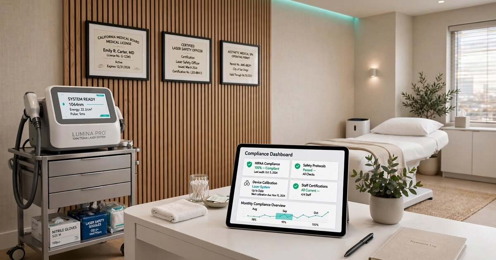

Medical Spa Regulatory Compliance SaaS for Multi-State Operators
In December 2024, New York City's Council and Department of State inspected 15 medical spas across the five boroughs. Every single one was performing medical procedures without the required licensing. Seventy-three percent had no medical professional oversight during procedures. Sixty percent lacked liability insurance. Four businesses have already lost their licenses. The American Med Spa Association counted 10,488 med spas operating in the United States as of 2023, each generating an average of $1.4 million in annual revenue. Every major software vendor in the space builds scheduling, EMR, and point-of-sale tools. Not one builds the compliance engine that determines whether the business is legally allowed to operate in its state.

The Problem
The U.S. medical spa market reached an estimated $23.3 billion in 2025 (Mordor Intelligence), growing at 12.5% annually toward $47.2 billion by 2031. The American Med Spa Association's 2024 State of the Industry Report counted 10,488 facilities nationwide, up 18% from 8,899 in 2022, with forecasts projecting 11,553 by 2025. Average annual revenue per location reached $1,398,833. Non-surgical aesthetic treatments saw 30% demand growth in 2024, driven by neuromodulators, dermal fillers, laser therapies, and the GLP-1 weight-loss wave that flooded med spas with millions of new patients.
The regulatory architecture governing these businesses is a patchwork of state medical practice acts, scope-of-practice rules, corporate practice of medicine doctrines, and pharmacy compounding laws that vary so dramatically across jurisdictions that a treatment configuration perfectly legal in Texas can constitute a felony in California. A nurse practitioner in Arizona can own a med spa, prescribe injectables, and supervise an aesthetician performing laser treatments with full independent practice authority. The same nurse practitioner attempting the same business model in New York would violate the state's corporate practice of medicine doctrine, which requires physician ownership of any entity delivering medical services, and risk criminal prosecution under New York Education Law §6512.
The compliance burden spans at least six regulatory domains simultaneously: (1) medical director agreements and supervision structures, which range from on-site physician presence requirements to telemedicine-only oversight depending on state; (2) staff credentialing and scope-of-practice matrices, where each treatment requires matching the provider's license type to the state's delegation rules; (3) device-specific operator requirements, where some states require separate laser safety officer certifications; (4) compounding pharmacy sourcing compliance, now subject to aggressive FDA enforcement following the GLP-1 crackdown; (5) marketing restrictions, which in some states prohibit before-and-after photos or specific drug brand names in advertising; and (6) adverse event reporting obligations. No existing software product addresses more than one of these domains, and most address zero.
Market Size
Original TAM calculation: 10,488 med spas in the U.S. (AmSpa, 2024), growing at roughly 1,600 new facilities per year. The addressable segment for a regulatory compliance SaaS product skews toward two customer profiles: single-location operators navigating multi-domain compliance without in-house counsel (roughly 7,800 facilities based on AmSpa's finding that less than 50% are physician-owned, meaning the remainder face heightened compliance risk from non-physician ownership structures), and PE-backed multi-state platforms that need centralized compliance dashboards across varying jurisdictions. At $399/month for a Standard tier (credentialing, supervision compliance, state rule engine) and $899/month for an Enterprise tier (full compliance suite including compounding pharmacy tracking, marketing review, and incident management), with an estimated 70/30 split between tiers, the blended ARPU is $549/month. At 7,800 addressable facilities in the first tier alone, the base TAM is $51.4 million in annual recurring revenue.
The second revenue layer targets the PE consolidation wave. Private equity firms have poured capital into multi-location med spa platforms: Sono Bello, Ideal Image, LaserAway, and SkinSpirit all operate across 10+ states. Each acquisition requires a compliance audit of the target's supervision structure, credentialing, and corporate practice of medicine conformity for every state of operation. A per-transaction compliance audit product at $5,000-$15,000 per acquisition targeting the estimated 200-300 PE-driven med spa transactions per year adds $1.5-4.5 million in transactional revenue. Total realistic SAM: $55 million. Year 3 target: 900 subscribers at blended $549/month plus 50 audit engagements = $6.7 million ARR.
The Product
A state-specific regulatory compliance engine purpose-built for medical aesthetic practices, combining a continuously updated rule database with workflow automation for the six compliance domains that determine whether a med spa can legally operate. Core modules:
- State regulatory rule engine: A continuously maintained database of medical spa regulatory requirements across all 50 states, D.C., and Puerto Rico. Covers: corporate practice of medicine rules (which 33 states enforce), medical director requirements (on-site frequency, supervision ratios, telemedicine eligibility), scope-of-practice boundaries by license type (MD/DO, NP, PA, RN, LPN, esthetician), and delegation rules for specific procedure categories. When a state medical board updates its rules (as Florida did in SB 1550 in 2024, modifying nurse practitioner prescribing authority), the platform flags affected clients and generates a specific remediation checklist.
- Staff credential lifecycle manager: Tracks every provider's license, certification, DEA registration, malpractice insurance, laser safety training, and BLS/ACLS currency across multiple states. Automatically monitors state licensing board databases for disciplinary actions, expirations, and renewal deadlines. Generates a treatment authorization matrix for each location: who can perform what, under what supervision, in which state. This matrix is the single most valuable compliance artifact in a med spa, and today it exists only in the owner's head or not at all.
- Compounding pharmacy compliance tracker: Following the FDA's March 2026 enforcement wave (30 warning letters to telehealth companies for misleading GLP-1 claims), this module tracks each pharmacy sourcing relationship against 503A and 503B requirements, monitors the FDA drug shortage list for changes that affect compounding exemptions, and maintains the prescriber documentation trail that the FDA now requires. When semaglutide was removed from the drug shortage list in February 2025, compounders had weeks to wind down. Med spas sourcing from non-compliant compounders after the deadline faced strict liability exposure with no warning system.
- Marketing compliance scanner: Reviews social media posts, website copy, and advertising materials against state-specific rules for medical advertising. California's Business and Professions Code §651 restricts how physicians can advertise procedures. New York prohibits unlicensed entities from using terms implying medical practice. The FDA prohibits off-label promotion of approved drugs. This module flags violations before they reach a state board investigator's desk.
Unit Economics
| Metric | Value |
|---|---|
| Monthly subscription (Standard: credentialing + rule engine) | $399/location |
| Monthly subscription (Enterprise: full compliance suite) | $899/location |
| Blended ARPU | $549/month |
| Regulatory database maintenance cost per subscriber/month | $42 |
| Customer acquisition cost | $3,800 |
| Expected LTV (28-month avg retention, 90% gross margin) | $13,834 |
| LTV:CAC ratio | 3.6:1 |
| Gross margin | 92% |
| Startup cost (18-month runway) | $3.4M |
| Break-even | 22 months |
Methodology note: The 28-month average retention assumption reflects the compliance SaaS dynamic where customers cannot easily churn once their credentialing workflows, supervision documentation, and state audit trails live in the platform. CAC of $3,800 assumes concentrated distribution through the American Med Spa Association's 4,500+ member network, state aesthetic medicine conferences, and partnership referrals from malpractice insurers who have direct financial interest in their policyholders maintaining compliance. The $42/month regulatory database cost covers a legal team of 2-3 paralegals tracking rule changes across 50 state medical boards, boards of nursing, boards of pharmacy, and relevant FDA guidance documents. Gross margin of 92% reflects software-plus-rules-database where marginal cost per subscriber is minimal. LTV calculation: $549 × 28 months × 90% = $13,834. Payback period: 6.9 months.
Go-to-Market
Phase 1 (months 1-8): Build the state regulatory database for the 10 highest-density med spa states: California, Florida, Texas, New York, Arizona, Colorado, Nevada, Illinois, Georgia, and New Jersey. These states account for roughly 60% of U.S. med spas and represent the full spectrum of regulatory approaches (California's strict corporate practice of medicine doctrine, Texas's permissive business structure rules, Florida's recent scope-of-practice expansions, New York's aggressive enforcement posture). Launch with a free compliance risk assessment tool that scores a med spa's current setup against its state's requirements, generating a remediation report. Convert assessment users to paid subscribers. Target distribution through AmSpa's member base and through direct partnerships with medical malpractice carriers (HPSO, CM&F Group, The Doctors Company) who insure aesthetic practitioners.
Phase 2 (months 9-16): Expand the rule database to all 50 states. Launch the Enterprise tier with compounding pharmacy compliance and marketing review modules. Begin selling PE due diligence packages: pre-acquisition compliance audits that map a target med spa's regulatory posture across every state of operation, flag exposure, and estimate remediation cost. Target the 15-20 active PE platforms in aesthetic medicine (Sono Bello, LaserAway, Skin Laundry, SkinSpirit, AestheticsPro, SEV Laser) through investment banking relationships and aesthetics-focused M&A advisors.
Phase 3 (months 17-24): Layer in automated state board monitoring (scraping disciplinary databases for actions against client providers), integrate with existing practice management systems (AestheticsPro, PatientNow, Nextech) via API to pull provider rosters and treatment logs directly, and build the insurance compliance module that auto-generates the documentation malpractice carriers require for policy renewals. Explore a consumer-facing "compliance verified" badge program where med spas that pass continuous compliance monitoring display a trust mark on their website and Google Business Profile.
Competitive Landscape
| Company | What It Does | Compliance Coverage | Pricing |
|---|---|---|---|
| AestheticsPro | Practice management (scheduling, before/after photos, EMR, marketing) | None: manages operations, not regulatory compliance | $199-399/mo |
| PatientNow | Clinical documentation, patient CRM, photo management | None: tracks clinical records, not whether the provider is authorized to deliver the treatment | Contact sales |
| Nextech | EMR and revenue cycle for plastic surgery/dermatology | Minimal: credential tracking exists but is generic, not state-specific | Contact sales |
| Boulevard / Mangomint / Zenoti | Salon and spa scheduling, POS, client management | None: built for hair salons and day spas, not medical entities | $175-500/mo |
| Compliancy Group / MedTrainer | Healthcare compliance (HIPAA, OSHA, general credentialing) | Horizontal: covers HIPAA training and generic credentialing, but has no med-spa-specific rule engine | $200-400/mo |
| This startup | State-specific med spa regulatory compliance engine | Core product: treatment authorization matrix, supervision structure validation, compounding compliance, marketing review | $399-899/mo |
The gap is structural, not accidental. Practice management companies built their products for the largest common denominator: scheduling, billing, and patient records. These features are nearly identical across dermatology clinics, plastic surgery practices, and med spas. The regulatory compliance layer, by contrast, is hyper-specific to the med spa business model: the intersection of non-physician ownership, delegated medical procedures, and aesthetic (non-covered) service delivery creates a compliance surface area that exists in no other healthcare vertical. A dermatology practice owned by a board-certified dermatologist does not need a product to tell it whether its owner can legally prescribe Botox. A med spa owned by a nurse practitioner employing estheticians to perform laser treatments across three states absolutely does.
Why Now
Four forces are converging to make the compliance gap untenable. First, enforcement is accelerating. New York City's December 2024 "Moving the Needle" investigation found that 100% of inspected med spas were operating illegally, with 73% lacking medical oversight during procedures. Four businesses lost their licenses. California's penalties for illegal med spa operation now reach $50,000 or double the fraud amount, with prison terms of two to five years. The FDA's March 2026 enforcement wave sent 30 warning letters to telehealth and med spa companies for misleading GLP-1 marketing. The enforcement apparatus is waking up to an industry that grew faster than regulation could follow.
Second, the GLP-1 explosion compressed a decade of regulatory risk into 18 months. Semaglutide compounding was legal during the drug shortage; it became illegal for most compounders by May 2025. Med spas that built 20-30% of their revenue around compounded weight-loss injections suddenly faced strict liability exposure if their sourcing pharmacy lost its exemption. The speed of that regulatory shift exposed how few operators had any system for tracking their own compliance posture against federal drug policy changes.
Third, PE consolidation is forcing professionalization. Multi-state platforms acquiring 5-15 locations per year across different regulatory jurisdictions cannot manage compliance with spreadsheets. Each acquisition introduces a new state's rules, a new set of provider credentials to verify, a new medical director agreement to validate. The PE investors backing these roll-ups (General Atlantic's investment in SkinSpirit, L Catterton's in Ideal Image) demand institutional compliance infrastructure as a condition of continued capital deployment. The insurance market is simultaneously tightening: malpractice carriers increasingly require documented compliance programs as an underwriting condition.
Fourth, less than half of U.S. med spas are physician-owned, according to AmSpa data from 2022. This means the majority operate under some form of management services organization (MSO) or medical director agreement structure that requires careful legal architecture to avoid violating corporate practice of medicine doctrines. These structures are valid in many states but require specific documentation, oversight protocols, and ongoing compliance monitoring that most operators treat as a set-it-and-forget-it exercise at launch, never revisiting even as state rules evolve.
Original Contribution: The Expected Compliance Penalty Cost
A calculation that contextualizes the SaaS pricing against enforcement risk: New York City's "Moving the Needle" investigation inspected 15 med spas and found 100% in violation. Four lost their licenses, a conditional closure rate of 26.7%. NYC has an estimated 800+ med spas (based on AmSpa's geographic density data and NYC's 7.6% share of U.S. population), meaning the inspection rate was roughly 1.9% of the local med spa population in a single enforcement cycle. Applying these observed rates nationally is imprecise but instructive.
If we assume: (a) a 2% annual probability of a state enforcement inspection reaching any given non-compliant med spa, (b) the NYC-observed 100% violation rate among non-physician-owned facilities without formal compliance programs, and (c) a 26.7% conditional probability of license revocation given a violation finding, then the expected annual cost of non-compliance from license loss alone is: 0.02 × 1.0 × 0.267 × $1,398,833 = $7,467 per year per non-compliant med spa. That calculation excludes legal defense costs ($25,000-$100,000 per enforcement action, based on healthcare defense attorney fee surveys), malpractice settlement exposure (the median aesthetic medicine malpractice claim settles for $147,500 according to a 2020 analysis in Aesthetic Surgery Journal, with cases involving scope-of-practice violations settling at significantly higher amounts), and reputational damage that compounds over the life of the business.
At $399/month ($4,788/year) for the Standard compliance tier, the product costs 64% of the expected annual enforcement penalty. The value proposition is not "save money on compliance." It is "your expected loss from non-compliance exceeds the cost of the software, before counting legal fees, settlements, or lost revenue." For enterprise customers, the math is starker: a 20-location platform faces an aggregate expected enforcement cost of $149,340 per year, making the $899/month enterprise tier ($215,760 across 20 locations) cost-neutral if it prevents even two enforcement actions per year.
Limitations
This analysis has several weaknesses worth stating directly. First, the NYC "Moving the Needle" inspection data has extreme selection bias: the 15 inspected businesses were chosen specifically because investigators had reason to suspect violations (advertising medical procedures without apparent medical licensing, customer complaints, prior disciplinary history). The 100% violation rate reflects a targeted enforcement action, not a random sample of the med spa population. A random-sample inspection of all NYC med spas would almost certainly find a lower violation rate. However, even if the true violation rate among non-physician-owned med spas is 30% rather than 100%, the expected enforcement penalty math still supports the product's pricing.
Second, the 50-state regulatory database is a moat but also an operational burden. Medical board rules, scope-of-practice statutes, and corporate practice of medicine case law change continuously. Maintaining accuracy across 50 state medical boards, 50 boards of nursing, 50 boards of pharmacy, and relevant federal guidance (FDA, DEA) requires dedicated legal staff, not just software engineers. The $42/month per-subscriber cost allocated to database maintenance may be optimistic in the first two years when the initial build requires comprehensive legal review of every jurisdiction.
Third, the competitive landscape may be more dynamic than the table above suggests. AestheticsPro and PatientNow both have the customer relationships and distribution to build compliance features as add-ons to their existing platforms. If compliance becomes a top-three buyer concern (which enforcement trends suggest it will), the incumbents will add checkbox compliance modules that may satisfy less sophisticated buyers. The startup's advantage is depth: a true compliance engine that models state-specific delegation chains and generates legally defensible documentation is fundamentally different from a credential expiration reminder. But the market may not distinguish between the two initially.
Strongest Counterargument
The most compelling case against this startup is that med spa owners may already have access to compliance guidance and choose not to use it, suggesting the problem is not a tooling gap but a willingness gap. AmSpa offers a state-by-state regulatory resource center, publishes compliance guides, and hosts conferences with dedicated regulatory tracks. Medical malpractice carriers provide risk management guidelines with their policies. Healthcare attorneys specializing in aesthetic medicine publish extensive commentary on compliance requirements. The information is available. The NYC investigation suggests operators are not failing to comply because they lack a software tool; they are failing because they calculated (correctly, until enforcement caught up) that the probability of getting caught was too low to justify the cost and operational friction of compliance.
This is the drunk-driving problem: everyone knows it is illegal, enforcement exists, and the consequences are severe. And yet people do it because the per-trip probability of getting caught is low. A compliance SaaS product does not change the incentive structure. An operator who consciously cuts corners on medical director oversight because it saves $3,000-$8,000 per month in physician fees will not suddenly comply because a dashboard tells them they are non-compliant. They already know. What changes behavior is not information but enforcement credibility, and that is a regulatory problem, not a software problem.
The counter-counter: the NYC investigation triggered a cascade. The AmSpa coverage of the report reached the industry's entire readership. Malpractice carriers are now asking more pointed underwriting questions. PE acquirers are conducting deeper compliance due diligence. The operators who were rationally non-compliant when enforcement probability was near zero are recalculating as that probability rises. The software becomes valuable not when it tells the willfully non-compliant to comply, but when it makes compliance operationally feasible for the 60-70% of operators who want to comply but find the state-by-state complexity genuinely paralyzing. The product's real market is not the bad actors. It is the overwhelmed ones.
The Bottom Line
The U.S. medical spa industry added 1,589 new facilities in a single year, bringing the total to 10,488, each averaging $1.4 million in revenue. The regulatory infrastructure governing these businesses varies across 50 states in ways that make multi-location compliance nearly impossible without specialized tooling, and the enforcement apparatus is tightening: NYC's sweep found universal non-compliance, California's penalties now reach $50,000 and prison time, and the FDA sent 30 warning letters in a single day over GLP-1 marketing. Every existing software vendor in the space builds tools for running a med spa. Nobody builds the tool for proving it is legal. The moat is the 50-state regulatory database and the treatment authorization matrix engine that translates raw statute into operational answers ("can this provider perform this treatment under this supervision model in this state?"). The risk is that incumbents bolt on lightweight compliance features before the startup builds distribution. The bet is that compliance depth, not compliance checkboxes, will determine which product wins in an enforcement environment that is no longer theoretical.
What You Can Do
If you own or operate a med spa: pull your medical director agreement and check three things right now. First, does it specify the supervision model your state actually requires (on-site, available within X minutes, telemedicine-only), or does it use generic language copied from a template? Second, is the agreement with a physician licensed in every state where you operate, or did you sign one agreement in your first state and assume it covers locations you opened in other jurisdictions? Third, does the agreement describe specific procedure categories and delegation authority, or does it say "supervises all medical services" without enumerating what those services are? Generic agreements are the single most common compliance failure in aesthetic medicine, and they are the easiest to fix before a state board inspector shows up.
If you are a malpractice insurer underwriting aesthetic medicine: your renewal questionnaires likely ask whether the insured has a medical director agreement on file. They should also ask whether the agreement has been reviewed against the current rules of every state in which the insured operates, when it was last updated, and whether the insured can produce a treatment authorization matrix mapping each provider to each procedure with state-specific legal authority. The answers will tell you more about risk than the insured's claims history. If you build software for aesthetic practices: the compliance layer is the most defensible feature you are not building. Every scheduling platform is interchangeable. An integrated compliance engine that prevents the customer's business from being shut down is not.
Related
📰 Childcare Licensing Compliance SaaS — the same state-by-state regulatory patchwork problem applied to another fast-growing, lightly regulated industry
📰 Workers' Comp Mod Rate Optimization SaaS — insurance-driven compliance tooling where the buyer's insurer has direct financial interest in the product's adoption
📰 Cleaning Verification SaaS — another compliance verification product where the moat is the operational documentation trail, not the underlying operations